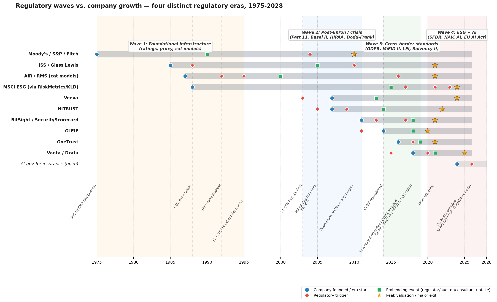

I'm Benoit Pasquier. For the next eight weeks I'm running a short, private research project on how quote, compare, and buy behavior shifts when the buyer lives inside ChatGPT, Claude, and Gemini. I'm looking for twenty-five-minute conversations with heads of distribution, digital, partnerships, and broker strategy at US and EU insurers.
Three things are colliding at the same time. OpenAI Apps and Anthropic tool-use turned AI assistants into places where a quote can happen end-to-end. Buyer behavior is drifting: comparison shopping for home and auto increasingly starts inside an assistant rather than on Google or a comparator. And the rulebook is being written in parallel, with NAIC, NY DFS, Colorado SB21-169, and the EU AI Act each carrying specific obligations for how insurers can underwrite and distribute through AI.
I'm testing that claim against reality, not from a desk. Hence the calls.

One anonymized deck at the end of the research window. It will include the things I hear that are common across carriers, the things that are idiosyncratic to one or two, and the regulatory positions I've been able to triangulate. No names, no quotes, no attribution. If your team ends up wanting to be named or cited later, that becomes a separate conversation.
If a call is useful, I will also send my own notes from our conversation back to you before I use anything from it.
Four years of growth work for early-stage B2B SaaS through Bulvert, a Paris-based collective. Most recently head of growth at a US infrastructure startup, before that a founder of a short-lived home-insurance brokerage experiment. Background in regulated-industry distribution, not general-purpose marketing. I am not a broker. I am not selling a platform. I am an operator looking for signal.
If any of the four questions above make you want to argue with me, that's the right reason to book. If you prefer email, reply with your sharpest disagreement and we can trade notes that way.
Are you building a product in this space?
No. If that changes, this page changes first.
Why should I trust that the findings stay anonymized?
Because the value of the research disappears the moment I break that. Standard researcher incentive. You will see the final deck before anyone else does and can redact anything that reads as identifiable.
Who else is in the sample?
I'm aiming for twelve to eighteen conversations across US and EU carriers, MGAs, and digital-native insurers, with a bias toward personal lines. Current mix leans home and auto, with early signal from health and SMB commercial.